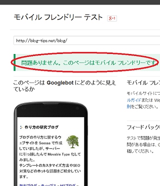

モバイルフレンドリーがランキング要素に
グーグルアルゴリズムの要素として、新しくモバイルフレンドリーが加わるようです。
"Google では、4 月 21 日より、ウェブサイトがモバイル フレンドリーかどうかをランキング要素として使用し始めます。"
どのくらいの影響があるのかは不明ですが、来月の21日というとあまり時間はないので、早急にスマホに対応しておいた方がよいかもしれません。
あなたのサイトがモバイルフレンドリーかどうかについては、こちらのページでチェックすることができます。
影響があるのはモバイルサイトのみといわれていますが、間接的にはＰＣサイトにも影響出てきそうな気がしております。いずれにしても、4月21日以降に影響が出てくるようです。
当ブログでも以前にスマホ対応しましたので、一応チェックしてみたのですが、特に問題はなかったようです。

さらにワンランク上の対策をめざすなら、スマホでの表示スピードにも着目しておくとよいかもしれません。スマホの場合、場所によっては遅い３Ｇ回線でしかつながらないケースもありますので、どのような環境でも快適に表示されるようにするのがベストといえます。
具体的にはレンダリングスピードの最速化ということになるかと思いますが、画像の容量を削減したり、ファーストビューの部分をインライン化したり、あるいはキャッシュの期間を長めにしたりと、表示スピードを速くすることができます。
現在のところ、自サイトではほぼ全てレスポンシブ対応しておりますが、スピードテストではひっかかる点が多数あり、この対応に最近は取り組んでおります。
特に、レビューサイトでは画像容量が大きいままのものもありますし、スマホサイズの320pxには合わない大きさのものもあったりして、そのような画像は圧縮するなりして修正した方がよいと思います。
ちなみに、上の画像も圧縮した上、横幅を320pxにて縮小していますが、このような加工はめんどうくさいです。
このようなモバイルフレンドリーへの地道な取り組みは面倒なだけで、あまり報われないな思っていたのですが、今後はランキング要素に加わるようなので、少しははげみになるものと思います。
ただ、スマホ対応したからといって、いきなり圏外から１位に上位表示されることはまずないと思いますので、ランキングへの影響は限定的なものではないかとぼくは考えております。
膨大な時間をかけてモバイルフレンドリーするのなら、新しいコンテンツを加えて充実させたり、あるいは既存コンテンツを修正した方がよほど効率的ではないかとも思いますが、どのくらいの影響があるのかは来月の21日頃には判明するものと思います。